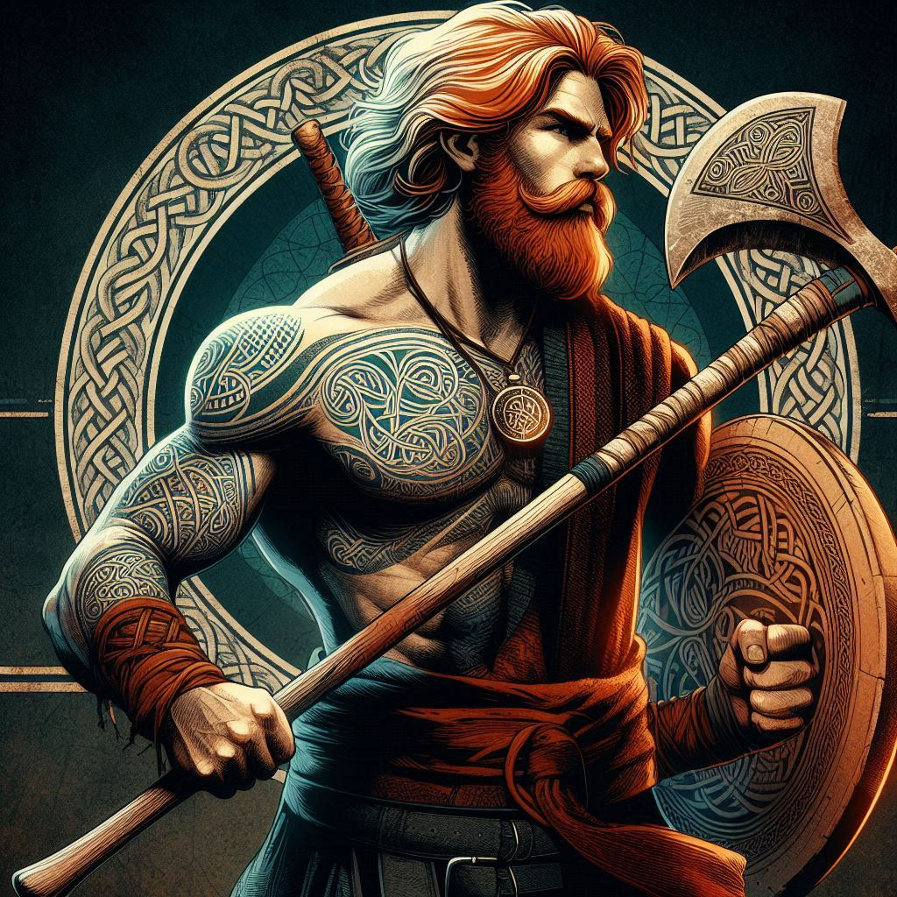
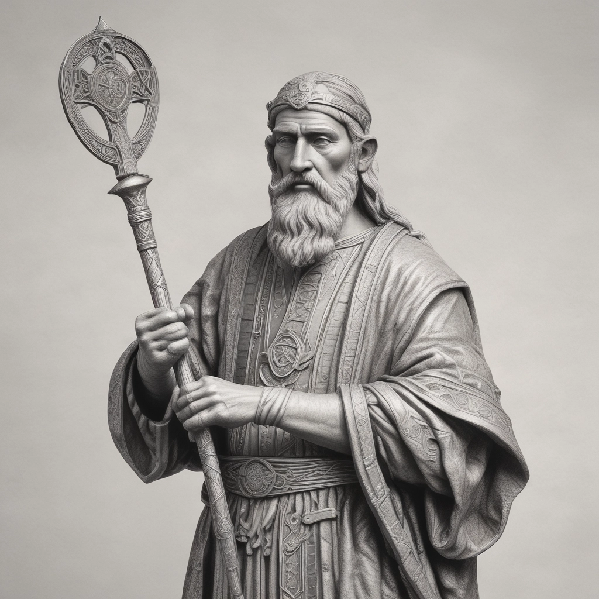
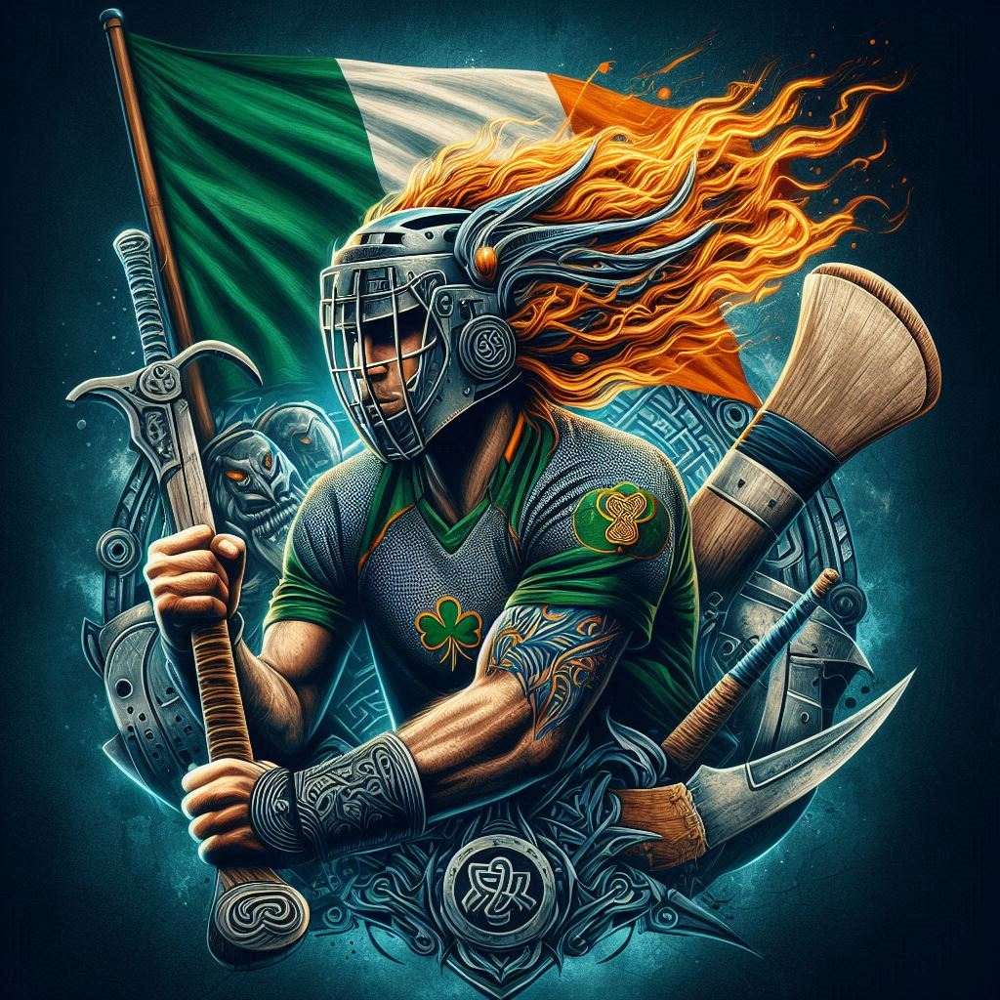
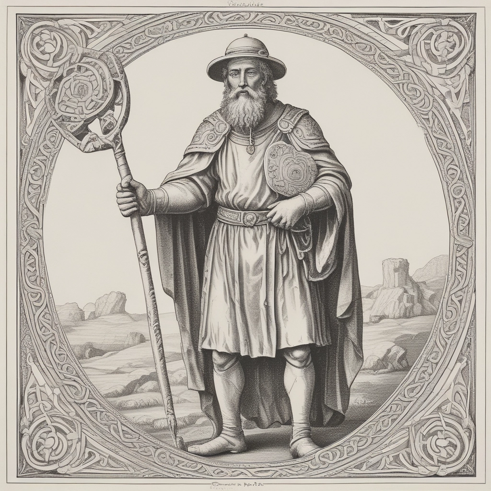
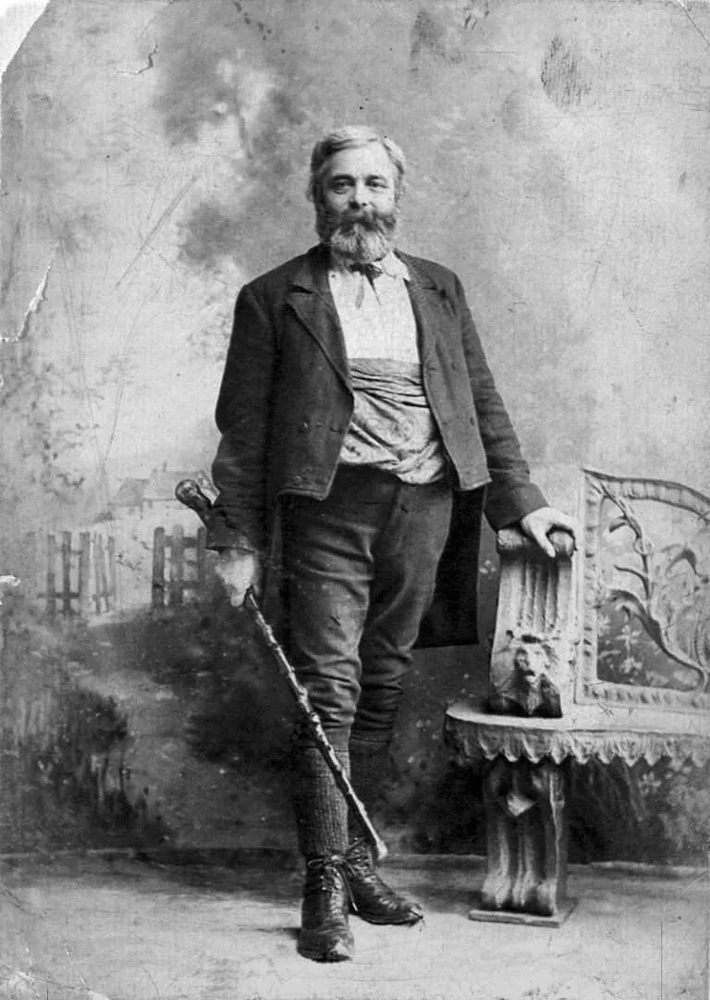

Mythic Age
Setanta & Cú Chulainn
Irish mythology tells of the young warrior Setanta, whose skill with a hurley became legendary. His story remains one of the earliest cultural links to the game.

Irish mythology tells of the young warrior Setanta, whose skill with a hurley became legendary. His story remains one of the earliest cultural links to the game.

Early forms of stick-and-ball games were played across Ireland long before written records of organised competition.

The famous statute attempted to suppress native Irish customs, including traditional games, demonstrating their importance.

Despite social and political upheaval, hurling survived through local communities and rural gatherings.

The game became woven into parish identity, connecting communities through shared tradition and competition.

Founded in Thurles, the GAA helped preserve and organise Ireland's native games for future generations.

A tragic day that forever linked Gaelic games with Ireland's wider national story.

Played in every generation, hurling remains one of the oldest and fastest field games in the world.